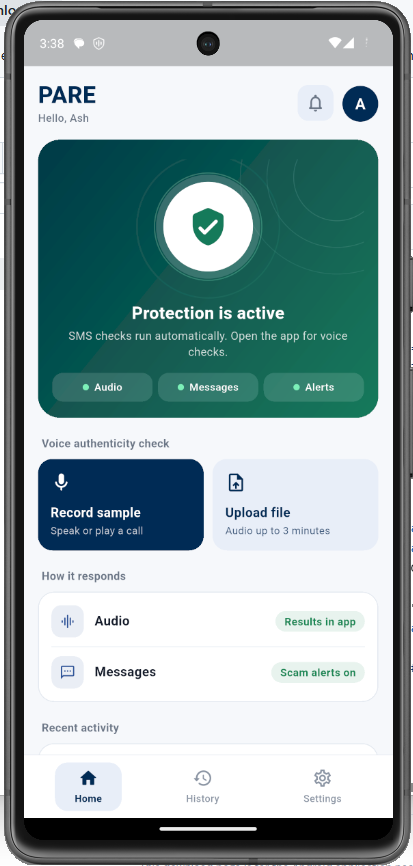
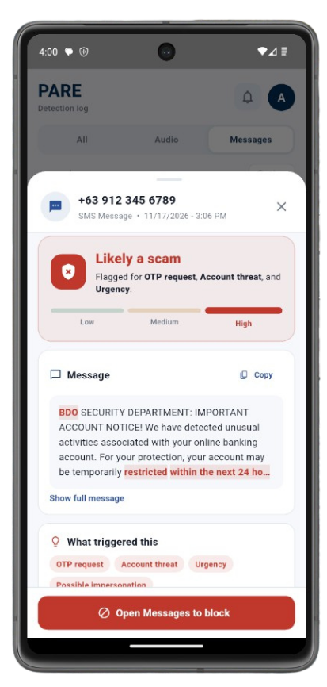

01 / MESSAGES
Spot Suspicious SMS
Messages are assessed and classified as Low, Medium, or High risk. Alerts help draw attention to messages that may need a closer look.
Low
Medium
High
P.A.R.E. helps you identify potentially fraudulent text messages and check whether an audio recording may be AI-generated.

Tools designed around everyday mobile communication.
Messages are assessed and classified as Low, Medium, or High risk. Alerts help draw attention to messages that may need a closer look.
Use Record Sample or Upload File to check an audio recording for signs that it may be AI-generated.
Return to your detection history to review previous audio and message results.
When a message is identified as potentially risky, P.A.R.E. presents its risk level and highlights the patterns that contributed to the result.
A detection result is an assessment, not a guarantee. Always verify unexpected requests through an official channel.

Use P.A.R.E.'s tools from your Android device.
Download the Android APK from the latest release and follow the installation prompts.
Check the risk level and explanation when P.A.R.E. flags a suspicious message.
Open the app to record a sample or upload an audio file for an authenticity check.
Get the latest available P.A.R.E. Android release.
Download Latest APK ↓ Check the release notes and app requirements before installing.